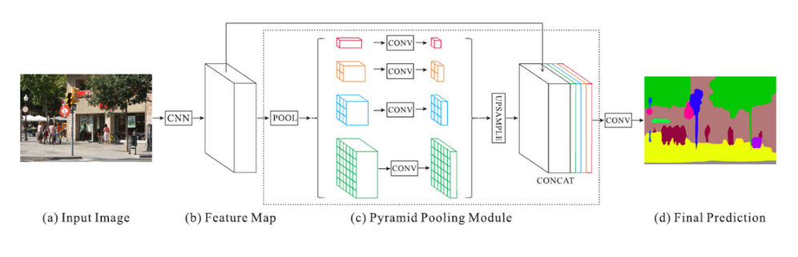

PSPNet
Table of Contents
1. PSPNet
https://arxiv.org/pdf/1612.01105.pdf 2017/4 sensetime
pspnet 是一个 semantic segmentation 模型, 它利用 Spatial Pyramid Pooling 获得全局上下文信息. 它的结构与 DeepLab 非常像: 前者使用不同尺度的 pooling 叠加, 后者使用不同尺度的 dilation conv 叠加.
1.1. Network

1.1.1. backbone
pspnet 使用 ResNet 50/101 做为 backbone 生成 feature map
1.1.2. pyramid pooling module
实际上就是 Spatial Pyramid Pooing. 实现上:
- 使用 4 个 Adaptive Average Pooling, output size 分别为 1, 2, 3, 6
- 假设 backbone 输出的 channel 为 N, 则这里使用 4 个 1x1 conv 把每个 pooling 的输出的 channel 变为 N/4
- 把每个 1x1 conv 的输出做 upsample 变成和 backbone 相同的输出尺寸, 然后和 backbone concat
1.1.3. auxiliary loss
在论文中也使用了和 Auxiliary Classifier 类似的方法: resnet 中间某一层通过 conv/fc/resize/upsampling/… 后与 label 计算 loss, 再乘以一个权重算到最终的 loss 里
Backlinks
Semantic Segmentation (Semantic Segmentation > Overview): - (c) 并行的输入或中间层的融合, 例如 deeplab, pspnet, icnet
Semantic Segmentation (Semantic Segmentation > PSPNet): PSPNet